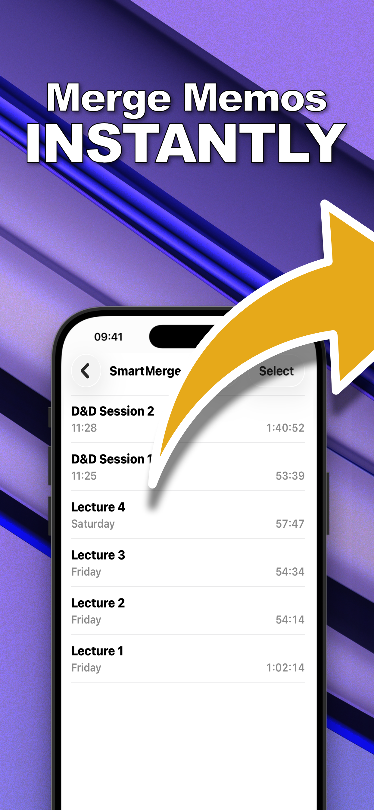
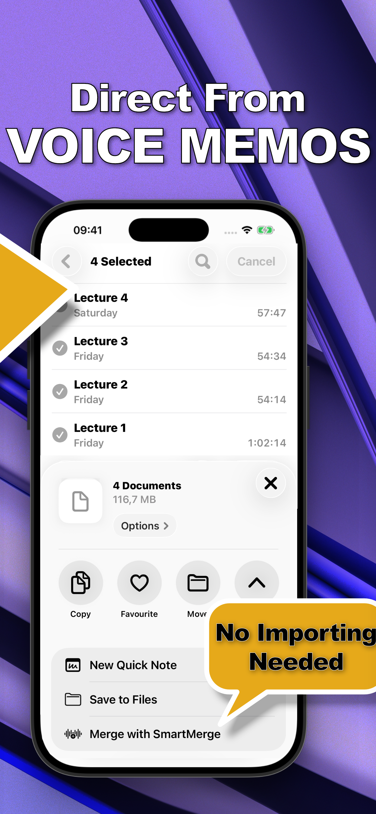

Apple Voice Memos can't combine recordings. SmartMerge can — straight from the share sheet. Join hours of M4A & WAV audio with zero quality loss, auto-trimmed edges, and instant chapter markers.

Students archiving lectures, podcasters stitching episodes, D&D tables saving four-hour sessions — SmartMerge combines audio files other apps choke on.
Select memos in Apple Voice Memos, tap Share, choose “Merge with SmartMerge.” No clunky importing required.
Dual-Engine processing joins hours of audio — 4-hour RPG sessions included — without memory crashes.
Shave 2, 3, or 5 seconds off the start and end of every clip to cut fumbles, clicks, and dead air automatically.
Every merged clip is tagged where it begins, so long lectures and episodes stay easy to navigate.
No confusing “Pro” tiers. No locked features. Try everything free for 3 days.
From scattered recordings to one polished audio file — here's what the fastest voice memo joiner on iPhone looks like.



No exporting to a computer. No GarageBand timelines. No uploading your private recordings to a website.
In Apple Voice Memos, select the clips you want to join and tap Share → “Merge with SmartMerge.” You can also pick M4A or WAV files from anywhere in the app.
Drag and drop clips into the right sequence, then let Auto-Trim cut 2, 3, or 5 seconds of fumbles and dead air from the edges of every clip.
Tap Merge. Seconds later you have one seamless file with a chapter marker at every clip — ready to share, save to Files, or archive.
Step-by-step answers to the most common iPhone audio questions — from merging two memos to producing a chaptered, multi-hour recording.
The complete step-by-step guide to joining recordings straight from the Voice Memos share sheet.
Read the guide → EssentialsTurn a folder of scattered clips into a single, ordered M4A or WAV file in seconds.
Read the guide → EssentialsWhy Apple's app can't do it, what your options are, and the fastest fix.
Read the guide → EssentialsSkip the Mac, GarageBand, and sketchy upload sites — merge everything on-device.
Read the guide → FormatsJoin the format Voice Memos actually records in — losslessly and in order.
Read the guide → FormatsCombine uncompressed WAV recordings without touching a desktop DAW.
Read the guide → QualityWhat actually degrades audio when you merge — and how SmartMerge avoids it.
Read the guide → FeaturesCut mic fumbles, clicks, and dead air from every clip in one pass.
Read the guide → FeaturesMake hours-long recordings navigable with automatic chapter tags.
Read the guide → StudentsArchive a whole week of classes as one chaptered, searchable recording.
Read the guide → PodcastersStitch intros, interviews, and outros into one episode — no desktop editor.
Read the guide → D&D / TTRPGSave the whole campaign: join 4-hour sessions crash-free, with a chapter per scene.
Read the guide →Quick answers about merging voice memos and audio files on iPhone.
Yes. Apple's Voice Memos app can't combine recordings by itself, but SmartMerge adds a Merge action to the iPhone share sheet: select your memos, tap Share, choose “Merge with SmartMerge,” and they're joined into one audio file in seconds. Learn More →
Select the recordings in Apple Voice Memos (or pick them inside SmartMerge), drag them into order, optionally enable Auto-Trim, and tap Merge. You get a single file with a chapter marker where each clip begins. Learn More →
Not with SmartMerge. Its Dual-Engine processing joins M4A and WAV audio with zero quality loss — no re-recording, no downsampling, no compression artifacts. Learn More →
SmartMerge merges M4A (the format Voice Memos records in) and WAV files — including hours-long recordings — with zero quality loss. Learn More →
No. SmartMerge merges audio entirely on your iPhone — no Mac, no GarageBand project, no uploading your private recordings to a website. Learn More →
Yes. The Dual-Engine system is built for massive files — multi-hour lectures and 4-hour D&D sessions merge without the memory crashes common in other audio apps. Learn More →
SmartMerge automatically tags the point where each original clip begins, so you can skip between chapters instead of scrubbing through hours of audio. Learn More →
Yes. Auto-Trim removes 2, 3, or 5 seconds from the start and end of every clip before merging — fumbles, clicks, and dead air gone in one pass. Learn More →
SmartMerge is free to download, and subscriptions start with a fully unlocked 3-day free trial. Continue weekly or annually, or make a one-time lifetime purchase — every plan unlocks the entire app. Learn More →
Yes. Drag and drop your clips into any order — chronological or manual — before you export the merged file. Learn More →
Your recordings are scattered across Voice Memos right now. In sixty seconds they could be one clean, chaptered audio file.